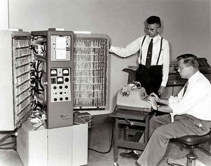

Evans first worked at the Bendix aviation electronics company, where he acted as project manager in 1955 to develop what some describe as an early personal computer that ran on an interpretive operating system. The Bendix G-15 was a bulky unit about the size of a two-door refrigerator. He stayed with the company just long enough to manage the G-20 project. In 1965, the University of Utah recruited him back to start their own computer science department. When he was building up the University of Utah department in 1968 he managed to convince Ivan Sutherland (who had funded Evans' DARPA research) to come to Utah, accepting the condition that they start a computer graphics company together.
Evans was born in Salt Lake City. He attended the University of Utah and studied electrical engineering; he earned his Bachelor of Science in Physics in 1949 and his Doctorate in Physics in 1953.

The social Web is incredibly good at shining light into dark corners.